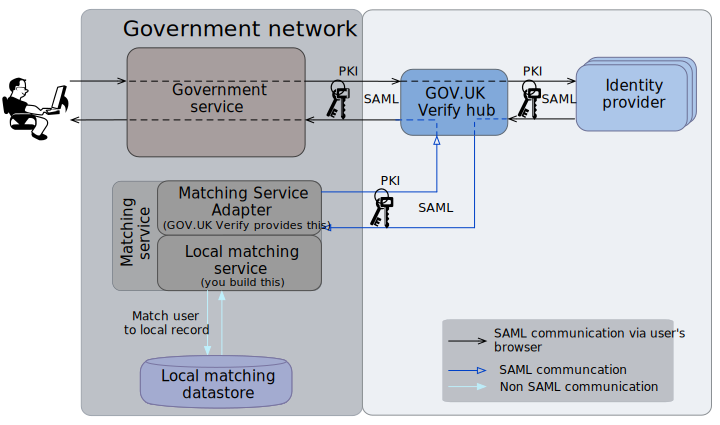

What does the GOV.UK Verify hub do?¶
The hub is at the centre of GOV.UK Verify, centralising the interactions between users, government services, and identity providers.

GOV.UK Verify architecture |
For more details, see the diagrams: |
- The GOV.UK Verify hub receives a SAML request from the government service to authenticate a user who is trying to access their service.
- The GOV.UK Verify hub helps the user select an identity provider that will authenticate them.
- The GOV.UK Verify hub sends a SAML request to the chosen identity provider to authenticate the user.
- The chosen identity provider authenticates the user. It then sends two assertions (in a SAML response) to the GOV.UK Verify hub. These assertions contain the:
- matching dataset – name, address, date of birth, and gender (optional), plus historical data where available
- persistent identifier which identifies the unique combination of the user and identity provider
- level of assurance to which the identity provider authenticated the user
- The GOV.UK Verify hub initiates matching of the authenticated user, based on the service’s matching strategy, by sending a SAML attribute query to the service’s Matching Service Adapter.
- If the user is matched, the GOV.UK Verify hub passes an assertion (SAML response) of the user’s authenticated identity to the service.
For more information, see the diagram showing the SAML message flow within the GOV.UK Verify federation.